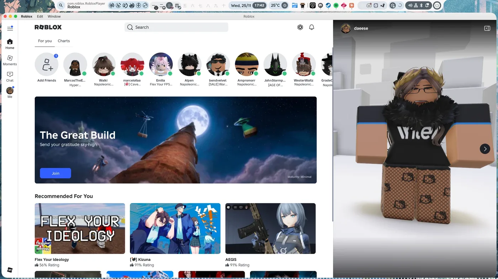
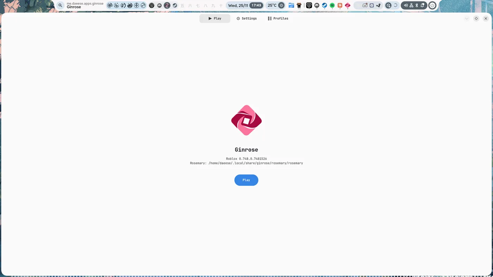

Ginrose
The official Mac Roblox client, running right on your system.
A community open-source launcher. It downloads the official Roblox macOS client and runs it through Rosemary, on Linux and natively on FreeBSD and GhostBSD.
- Linux
- FreeBSD
- GhostBSD


Ginrose is an independent community project, not an official Roblox launcher. It is not affiliated with or endorsed by Roblox Corporation.
Ginrose is free and open-source software under GPL-3.0-or-later. Flatpak builds published by the Ginrose project are available on GitHub. Modified versions must use their own name; the Ginrose name, logo and application ID are covered by the project’s trademark policy.
Latest updates
Current version
- year
- 26
- major
- 0
- features
- 5
- fixes
- 0
Released November 23, 2026. Dialogs now float on tiling compositors such as Hyprland, and Rosemary moves to newer upstream work with fixes for Metal shader libraries and for FreeBSD.
- Latest
26.0.5.1 · November 26, 2026 — Ginrose opens on FreeBSD again: its window crashed as soon as it opened, because starting a helper program such as xdg-mime by name corrupted the launcher’s memory there. Helper programs are now started by their full path. Nothing changes on Linux, and Rosemary is the same as in 26.0.5.0.
26.0.5.0 · November 23, 2026 — Rosemary moves to newer upstream work, with fixes for Metal shader libraries and for FreeBSD. Dialogs, a window with a title and no minimize button, now float on tiling compositors such as Hyprland instead of being tiled. Two more Rosemary settings can be set in the extra environment: ROSEMARY_REGION_COUNT_REUSE, which helps games on FreeBSD, and ROSEMARY_METAL_MAP_MIX_TO_FMIX.
26.0.4.0 · November 20, 2026 — Versions are now numbered by year: the year, then major changes, new features and fixes. Discord can show the operating system you play on, as “Ginrose on Fedora Linux”, with a new setting that is off by default. On FreeBSD, the installer checks for a font, which FreeBSD’s gtk4 package doesn’t bring: without one, Ginrose’s window has no text. Rosemary is the same as in 0.3.9.
0.3.9 · November 19, 2026 — Ginrose runs on FreeBSD: each release now has FreeBSD builds of Ginrose and of Ginrose’s Rosemary, built on FreeBSD 14.5 for 14.5 and later. Rosemary moves to newer upstream work, with FreeBSD support for kqueue events, shared memory and thread info, keyboard input in popup windows and faster OpenGL calls. The prefix stays on MiniDarwin 21.
0.3.8 · November 18, 2026 — Rosemary moves to newer upstream work, with Metal draw state rebuilt only when it changes, fewer allocations when submitting and a workaround for a Mesa driver bug. Ginrose follows an account that Roblox put on a deployment channel other than LIVE, and building it from source on FreeBSD works better. First launch upgrades the prefix to MiniDarwin 21; Ginrose 0.3.7 and older cannot reuse it.
0.3.7 · November 13, 2026 — Rosemary moves to newer upstream main with Metal rendering and shader improvements, asynchronous pipeline compilation and touchpad pinch. Mouse drags stay with the view where they began, hidden views no longer take clicks, and raising a window preserves keyboard focus. First launch upgrades the prefix to MiniDarwin 17; Ginrose 0.3.6 and older cannot reuse it.
0.3.6 · November 9, 2026 — An optional notice shows where the Roblox server you join is, for a few seconds over the game. Rosemary moves onto upstream main with Ginrose’s open pull requests; on its first launch it updates the prefix, which older versions then refuse.
0.3.5 · November 8, 2026 — The Roblox download finishes on slower connections: it was cut off after 30 seconds, so below about 5 MB/s the setup and repair always failed.
0.3.4 · November 6, 2026 — The rosemary command reports an error when it cannot save the new Rosemary selection, instead of claiming success. The installer keeps a Roblox link handler another app already has.
0.3.3 · November 6, 2026 — Presented frames are still reported about a frame after they are shown, but presentation no longer waits for the previous frame, so a stuck window cannot hold the others back.
0.3.2 · November 5, 2026 — Smoother frame pacing and less CPU per draw in Rosemary, so games feel as fast as their frame rate. On Wayland the cursor goes where Roblox puts it, as with Shift Lock after rotating the camera. ROSEMARY_EVENT_LOG can be added to the extra environment to record input when reporting a problem.
0.3.1 · November 1, 2026 — Native packages for Arch, Debian, Ubuntu, Fedora and openSUSE, with the same build as the Flatpak, plus a Nix flake and a Gentoo ebuild. Native installs list the Rosemary runners Butter installed.
0.3.0 · October 31, 2026 — Moved to Rosemary 0.5.0, keeping GPU video and AAC sound. Prefix system files that a newer Rosemary adds are put back on their own before a launch. Ginrose Studio, for Roblox Studio, ships alongside.
0.2.6 · October 24, 2026 — Videos in experiences now play with sound. FFmpeg 8 decodes H.264 on the GPU and AAC audio on the CPU. The Flatpak uses the runtime’s codecs extension; without usable FFmpeg, video stays blank instead of crashing.
0.2.5 · October 24, 2026 — Prevented crashes in experiences that play video, before video decoding arrived in 0.2.6.
0.2.4 · October 24, 2026 — Roblox opens again while an earlier copy is still closing. Ginrose closes its helper processes before relaunching.
0.2.3 · October 23, 2026 — Updated to Rosemary 0.4.1, retaining the cursor sync fix.
0.2.2 · October 22, 2026 — Updated to Rosemary 0.4.0, with a fix that keeps the cursor in sync when switching windows.
0.2.1 · October 20, 2026 — Switched to upstream Rosemary with microphone input and Ctrl-based copy and paste.
GINROSE(1)Linux, FreeBSD and GhostBSDGINROSE(1)
Documentation
Name
ginrose — A community open-source launcher for the official Roblox macOS client.
Systems
Linux on x86_64, through the Flatpak or a native package for Arch, Debian, Ubuntu, Fedora or openSUSE, plus a Nix flake and a Gentoo ebuild. FreeBSD 14.5 and later, natively, with builds of its own; GhostBSD is built on FreeBSD and runs the same builds.
Install
You need Flatpak and an x86_64 computer. Download me.daeese.apps.ginrose.flatpak and SHA256SUMS from the latest release, then run these commands in the download folder:
sha256sum -c --ignore-missing SHA256SUMS
flatpak remote-add --user --if-not-exists flathub https://dl.flathub.org/repo/flathub.flatpakrepo
flatpak install --user flathub org.gnome.Platform//51
flatpak install --user me.daeese.apps.ginrose.flatpakThe Flatpak includes Ginrose’s Rosemary build. On the first run, setup downloads the official Roblox client. To update Ginrose, download and install the latest Flatpak again; the update command below updates Roblox only.
Native packages
Each release also has the same build as a distribution package, for those who would rather not use Flatpak. They need glibc 2.39, GTK 4.14 and libadwaita 1.6 or newer: Debian 13, Ubuntu 25.04, Fedora 42 or later, openSUSE Tumbleweed and Arch have them. Download the one for your distribution from the latest release, then run:
sudo pacman -U ginrose-bin-26.0.5.1-1-x86_64.pkg.tar.zst # Arch
sudo apt install ./ginrose_26.0.5.1_amd64.deb # Debian, Ubuntu
sudo dnf install ./ginrose-26.0.5.1-1.x86_64.rpm # Fedora
sudo zypper install ./ginrose-26.0.5.1-1.x86_64.rpm # openSUSERosemary is not part of these packages: Ginrose uses a rosemary on your PATH, such as the one in the AUR, or downloads one in its setup, which then needs SDL 3.4 and OpenAL. NixOS has a flake that builds Ginrose with Rosemary included, and Gentoo has an ebuild in rosemary-gentoo-overlay; both build from source.
Packaging recipes ↗FreeBSD and GhostBSD
Flatpak doesn’t run on FreeBSD, so Ginrose is installed natively there, for your user. Each release has FreeBSD builds of Ginrose and of Ginrose’s Rosemary, built on FreeBSD 14.5 for 14.5 and later:
sudo pkg install gtk4 libadwaita sdl3 curl mesa-libs dejavu
fetch -o - https://raw.githubusercontent.com/nunreasonable/ginrose/main/install.sh | sh -s -- --with-rosemaryVulkan needs the GPU’s driver: nvidia-driver with an NVIDIA card, or mesa-dri with AMD or Intel. GTK needs at least one font, which FreeBSD’s gtk4 package doesn’t bring: without one, Ginrose’s window has no text at all, and dejavu is enough. FreeBSD support is new in both Rosemary and Ginrose, so expect rough edges. Ginrose Studio has no FreeBSD build yet.
GhostBSD is built on FreeBSD, so the same builds and the same commands work there.
Rosemary in the Flatpak
The Flatpak bundles Rosemary from upstream main with Ginrose’s open pull requests for cursor sync, video playback, drag and drop and lower CPU use while idle, plus the server location notice. Frame pacing, Wayland pointer warps, microphone input and Ctrl-based copy and paste come from upstream Rosemary. Rosemary is a separate GPL-3.0 component.
If another app opens Roblox links, select Ginrose as the handler after installing:
xdg-mime default me.daeese.apps.ginrose.player.desktop x-scheme-handler/roblox-player x-scheme-handler/robloxRosemary dev build
The dev build is Rosemary with fixes that were tested in games but are not in a release yet. It is not an official release, it changes without notice, and it can break. It is for native installs only: the Flatpak always runs the Rosemary it comes with. Download rosemary-ginrose-x86_64 and SHA256SUMS from the dev-production release, then run these commands in the download folder:
sha256sum -c --ignore-missing SHA256SUMS
ginrose rosemary rosemary-ginrose-x86_64To go back, run ginrose setup and choose Download Ginrose’s Rosemary.
Dev build and what it changes ↗Commands
For the Flatpak, run these commands in a terminal after installation:
flatpak run me.daeese.apps.ginrose- Open the launcher; setup runs on first launch.
flatpak run me.daeese.apps.ginrose setup- Run setup again.
flatpak run me.daeese.apps.ginrose launch [link]- Launch Roblox and join the game named in a link.
flatpak run me.daeese.apps.ginrose update- Download the current Roblox client.
flatpak run me.daeese.apps.ginrose repair- Download a clean Roblox client and restore Rosemary’s system files.
flatpak run me.daeese.apps.ginrose status- Check what is installed and what may block launch.
Once installed
Open Ginrose from your app menu or use the Play buttons on roblox.com. The launcher supports per-game graphics profiles, frame caps and allowlisted FastFlags. Discord Rich Presence works while the Discord app is open, and an optional notice shows where the server you join is.
Roblox is downloaded directly from Roblox. Ginrose does not patch the client or inject code; it writes only allowlisted local settings to ClientAppSettings.json.
Before every launch, Ginrose checks Roblox’s code signature and client files, as well as Rosemary’s system files. Modified clients are refused. If an integrity check fails, use the repair command to restore clean files, then try again.
See also
ginrose-studio(1)Ginrose Studio, the launcher for Roblox Studio.rosemaryRosemary, the upstream project Ginrose runs the Roblox client through.nunreasonable/ginroseSource code, issues and packaging recipes.
ginrose 26.0.5.1November 26, 2026GINROSE(1)